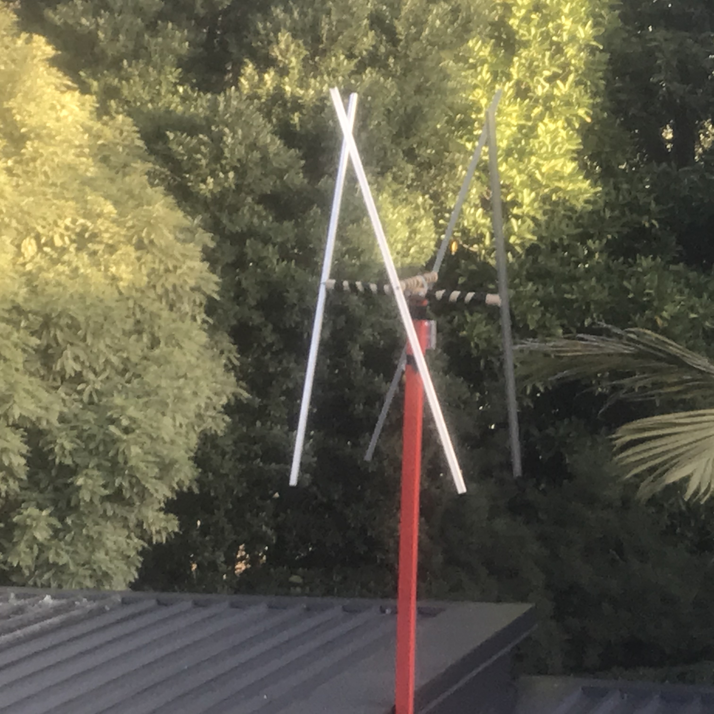

Recently i found my old RTL-SDR that i brought a few years ago and wanted to see if i could get better reception than i got
with the stock antenna, so i set out on making a new antenna that would hopefully get better reception and be able to get some
satelite images from the NOAA series of weather satelites and being able to track airplanes as i live within 15 kilometers of an airport.
I wanted to primarly use the antenna for weather satelites so i cut the antenna for the frequency of 137 Mhz which works out to be
97cm long. i wanted to make a double cross antenna because that is a good antenna for weather satelites.

My antenna fully installed with an 30dB amp